Note
Go to the end to download the full example code.
Paper 2 Results#
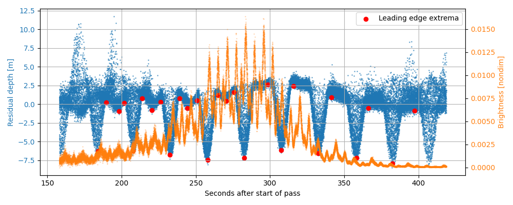
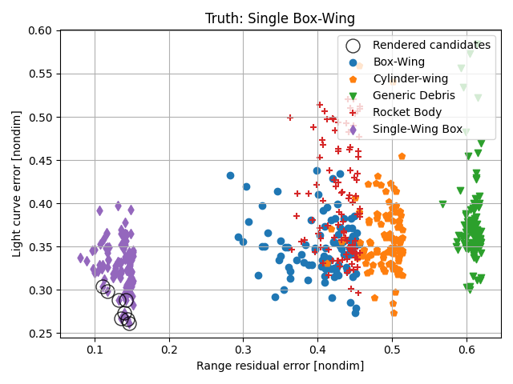
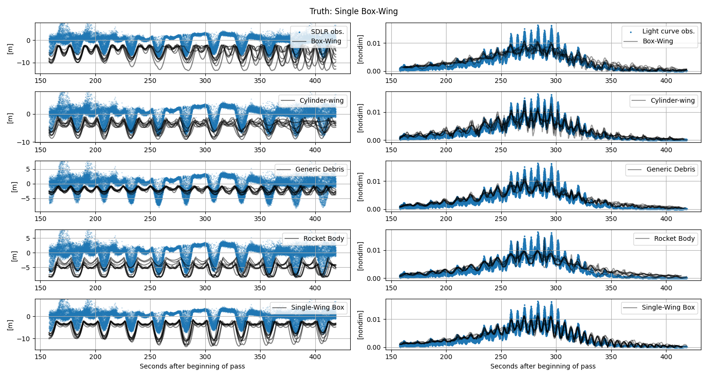
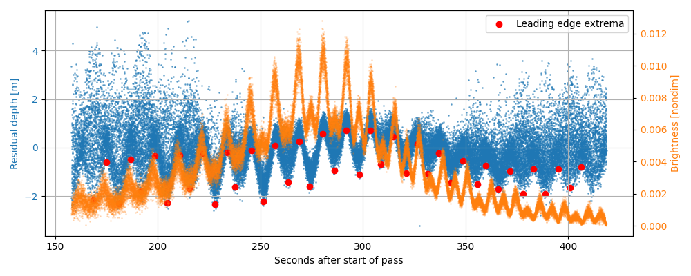
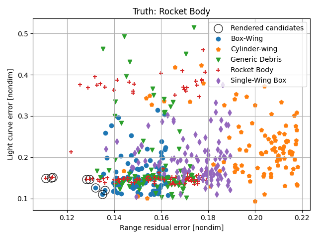
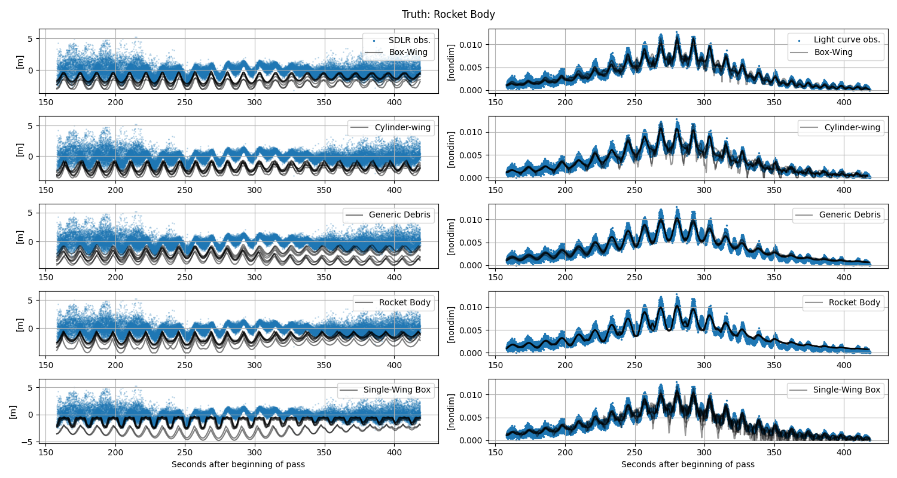
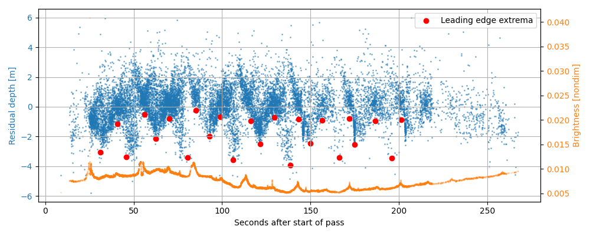
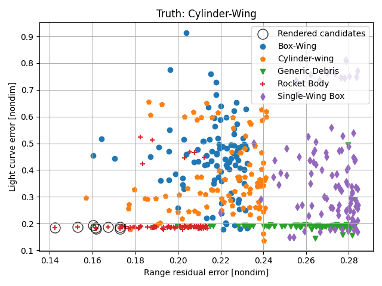
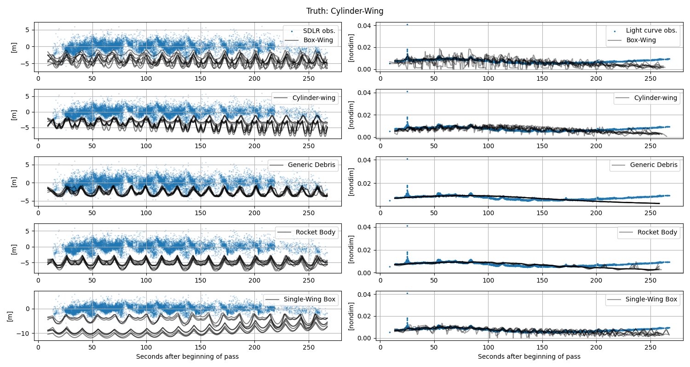
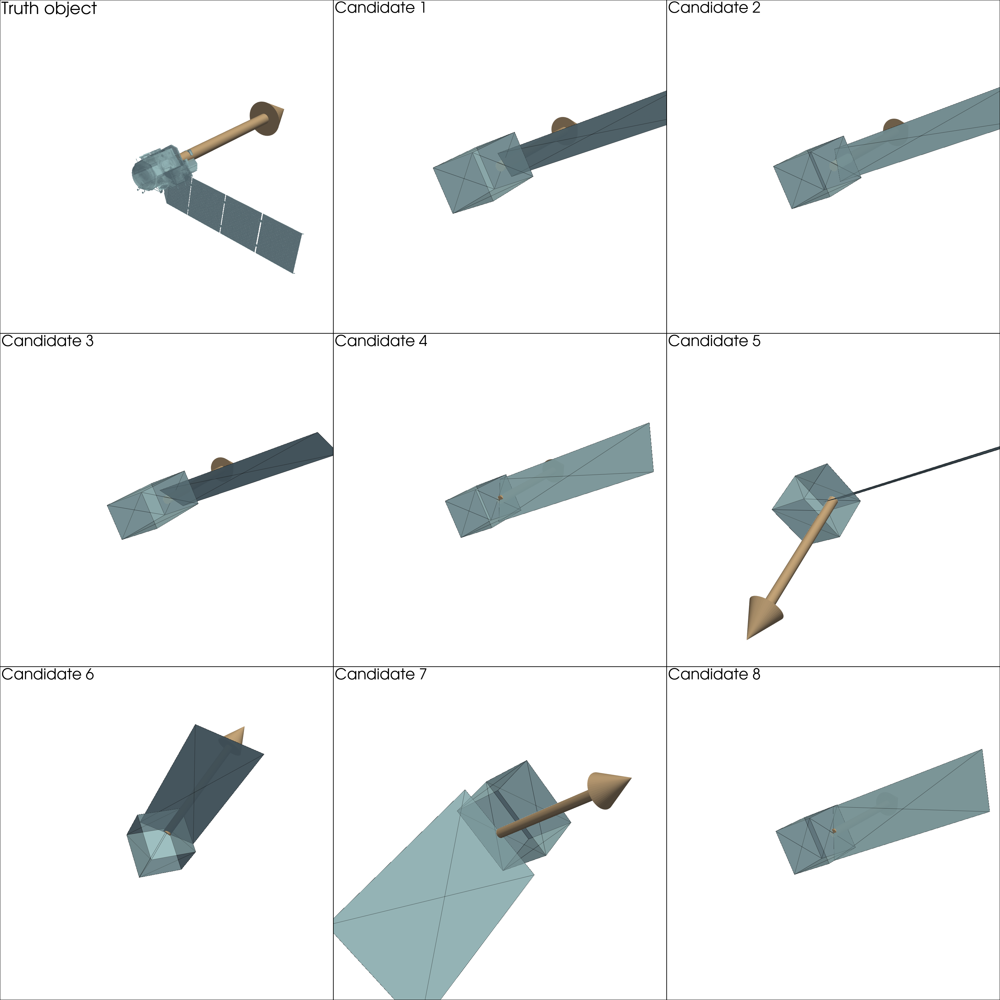
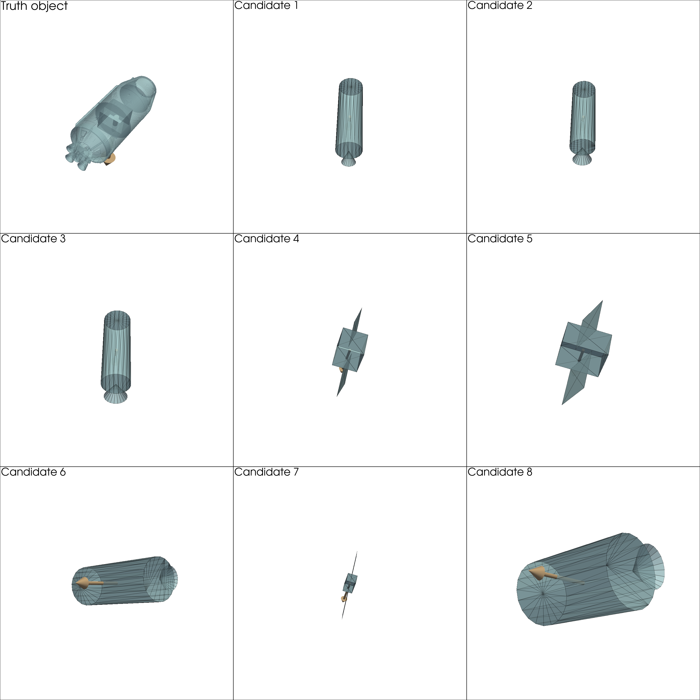
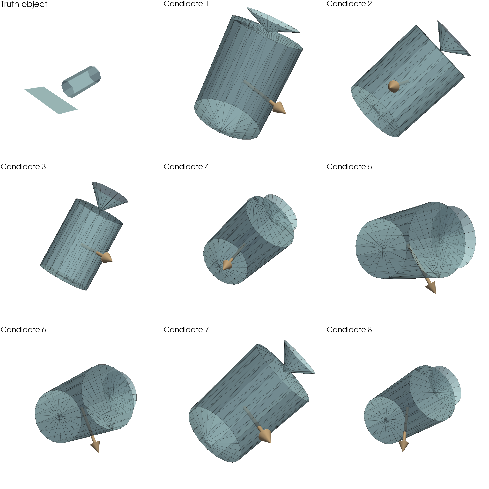
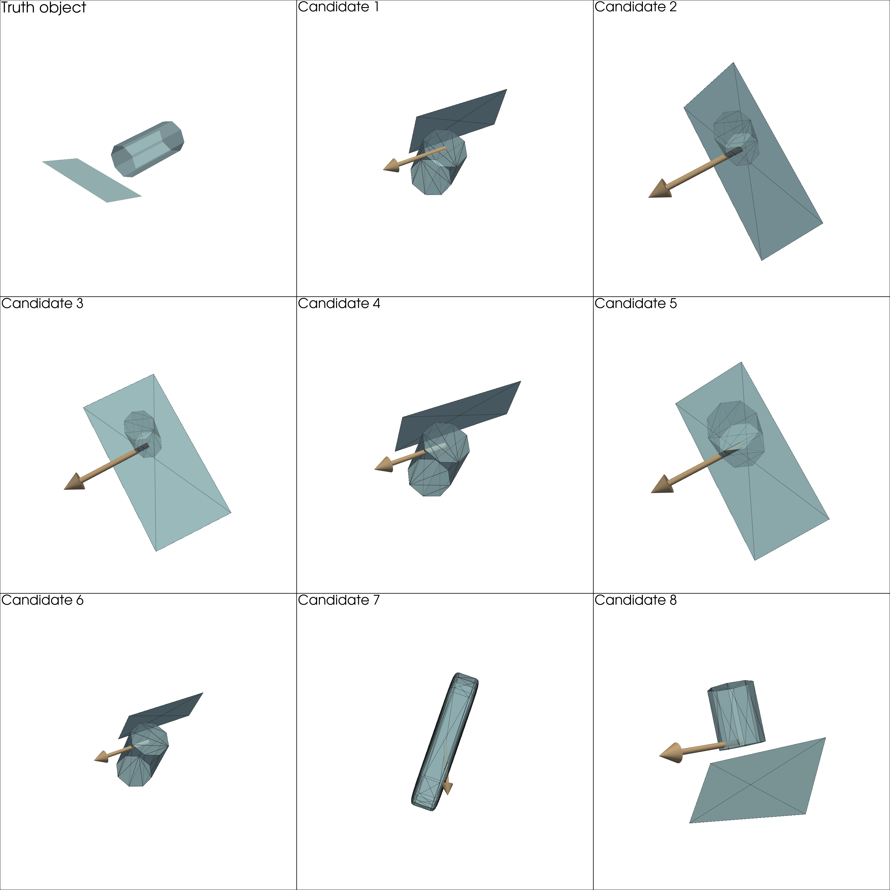
box_wing
scyl_wing
blob
rocket_body
sbox_wing
/home/liam/Documents/mirage/mirage/vis/visualization.py:902: PyVistaDeprecationWarning:
/home/liam/Documents/mirage/mirage/vis/visualization.py:902: Arguments 'start', 'direction' must be passed as keyword arguments to function 'Arrow'.
From version 0.50, passing these as positional arguments will result in a TypeError.
pv.Arrow(origin, direction, **arrow_kwargs),
bw HBR report: true_hbr=11.08, est_hbrs=array([13.6605251 , 13.12888875, 11.45204795, 10.89150885, 11.01110699,
11.01110699]), 23.3
bw omega report: [15.01549056 15.01549056 15.01549056 15.01549056 15.03042722 15.01549056], max_ang=40.00, 0.2
for case_name='bw', sbox_wing#1, w0_guess=array([ 0. , 0. , -0.26206975]), w_of_t_guess[0]=array([ 0. , 0. , -0.26206975]), w0_guess_inertial=array([-0.24252019, -0.07791858, -0.06158901])
/home/liam/Documents/mirage/mirage/vis/visualization.py:902: PyVistaDeprecationWarning:
/home/liam/Documents/mirage/mirage/vis/visualization.py:902: Arguments 'start', 'direction' must be passed as keyword arguments to function 'Arrow'.
From version 0.50, passing these as positional arguments will result in a TypeError.
pv.Arrow(origin, direction, **arrow_kwargs),
for case_name='bw', sbox_wing#2, w0_guess=array([ 0. , 0. , -0.26206975]), w_of_t_guess[0]=array([ 0. , 0. , -0.26206975]), w0_guess_inertial=array([-0.24252019, -0.07791858, -0.06158901])
/home/liam/Documents/mirage/mirage/vis/visualization.py:902: PyVistaDeprecationWarning:
/home/liam/Documents/mirage/mirage/vis/visualization.py:902: Arguments 'start', 'direction' must be passed as keyword arguments to function 'Arrow'.
From version 0.50, passing these as positional arguments will result in a TypeError.
pv.Arrow(origin, direction, **arrow_kwargs),
for case_name='bw', sbox_wing#3, w0_guess=array([ 0. , 0. , -0.26206975]), w_of_t_guess[0]=array([ 0. , 0. , -0.26206975]), w0_guess_inertial=array([-0.24252019, -0.07791858, -0.06158901])
/home/liam/Documents/mirage/mirage/vis/visualization.py:902: PyVistaDeprecationWarning:
/home/liam/Documents/mirage/mirage/vis/visualization.py:902: Arguments 'start', 'direction' must be passed as keyword arguments to function 'Arrow'.
From version 0.50, passing these as positional arguments will result in a TypeError.
pv.Arrow(origin, direction, **arrow_kwargs),
for case_name='bw', sbox_wing#4, w0_guess=array([ 0. , 0. , -0.26206975]), w_of_t_guess[0]=array([ 0. , 0. , -0.26206975]), w0_guess_inertial=array([-0.24252019, -0.07791858, -0.06158901])
/home/liam/Documents/mirage/mirage/vis/visualization.py:902: PyVistaDeprecationWarning:
/home/liam/Documents/mirage/mirage/vis/visualization.py:902: Arguments 'start', 'direction' must be passed as keyword arguments to function 'Arrow'.
From version 0.50, passing these as positional arguments will result in a TypeError.
pv.Arrow(origin, direction, **arrow_kwargs),
for case_name='bw', sbox_wing#5, w0_guess=array([ 0. , 0. , -0.24481457]), w_of_t_guess[0]=array([ 0. , 0. , -0.24481457]), w0_guess_inertial=array([ 0.21539402, 0.10480039, -0.05056155])
/home/liam/Documents/mirage/mirage/vis/visualization.py:902: PyVistaDeprecationWarning:
/home/liam/Documents/mirage/mirage/vis/visualization.py:902: Arguments 'start', 'direction' must be passed as keyword arguments to function 'Arrow'.
From version 0.50, passing these as positional arguments will result in a TypeError.
pv.Arrow(origin, direction, **arrow_kwargs),
for case_name='bw', sbox_wing#6, w0_guess=array([-0.15100208, 0.18795557, 0.10336339]), w_of_t_guess[0]=array([-0.18647036, 0.09556931, 0.15783718]), w0_guess_inertial=array([-0.21848549, -0.03257291, 0.14149332])
/home/liam/Documents/mirage/mirage/vis/visualization.py:902: PyVistaDeprecationWarning:
/home/liam/Documents/mirage/mirage/vis/visualization.py:902: Arguments 'start', 'direction' must be passed as keyword arguments to function 'Arrow'.
From version 0.50, passing these as positional arguments will result in a TypeError.
pv.Arrow(origin, direction, **arrow_kwargs),
for case_name='bw', sbox_wing#7, w0_guess=array([0.26114913, 0. , 0. ]), w_of_t_guess[0]=array([0.26114913, 0. , 0. ]), w0_guess_inertial=array([-0.06700512, 0.18653258, 0.17004345])
/home/liam/Documents/mirage/mirage/vis/visualization.py:902: PyVistaDeprecationWarning:
/home/liam/Documents/mirage/mirage/vis/visualization.py:902: Arguments 'start', 'direction' must be passed as keyword arguments to function 'Arrow'.
From version 0.50, passing these as positional arguments will result in a TypeError.
pv.Arrow(origin, direction, **arrow_kwargs),
for case_name='bw', sbox_wing#8, w0_guess=array([ 0. , 0. , -0.26206975]), w_of_t_guess[0]=array([ 0. , 0. , -0.26206975]), w0_guess_inertial=array([-0.24252019, -0.07791858, -0.06158901])
/home/liam/Documents/mirage/mirage/vis/visualization.py:902: PyVistaDeprecationWarning:
/home/liam/Documents/mirage/mirage/vis/visualization.py:902: Arguments 'start', 'direction' must be passed as keyword arguments to function 'Arrow'.
From version 0.50, passing these as positional arguments will result in a TypeError.
pv.Arrow(origin, direction, **arrow_kwargs),
box_wing
scyl_wing
blob
rocket_body
sbox_wing
/home/liam/Documents/mirage/mirage/vis/visualization.py:902: PyVistaDeprecationWarning:
/home/liam/Documents/mirage/mirage/vis/visualization.py:902: Arguments 'start', 'direction' must be passed as keyword arguments to function 'Arrow'.
From version 0.50, passing these as positional arguments will result in a TypeError.
pv.Arrow(origin, direction, **arrow_kwargs),
rb HBR report: true_hbr=3.55, est_hbrs=array([2.91612969, 2.8152032 , 3.07346416, 3.6220417 ]), 20.8
rb omega report: [16.56862976 16.56862976 16.56862976], max_ang=26.14, 10.5
for case_name='rb', sbox_wing#1, w0_guess=array([ 0.12389647, -0.15260112, 0.21209899]), w_of_t_guess[0]=array([ 0.12389647, -0.08756223, -0.24618274]), w0_guess_inertial=array([-0.11822419, -0.13320546, -0.22782178])
/home/liam/Documents/mirage/mirage/vis/visualization.py:902: PyVistaDeprecationWarning:
/home/liam/Documents/mirage/mirage/vis/visualization.py:902: Arguments 'start', 'direction' must be passed as keyword arguments to function 'Arrow'.
From version 0.50, passing these as positional arguments will result in a TypeError.
pv.Arrow(origin, direction, **arrow_kwargs),
for case_name='rb', sbox_wing#2, w0_guess=array([ 0.12383075, -0.07074364, 0.25156451]), w_of_t_guess[0]=array([ 0.12383075, -0.09403368, -0.24381762]), w0_guess_inertial=array([-0.11491948, -0.13116081, -0.23068111])
/home/liam/Documents/mirage/mirage/vis/visualization.py:902: PyVistaDeprecationWarning:
/home/liam/Documents/mirage/mirage/vis/visualization.py:902: Arguments 'start', 'direction' must be passed as keyword arguments to function 'Arrow'.
From version 0.50, passing these as positional arguments will result in a TypeError.
pv.Arrow(origin, direction, **arrow_kwargs),
for case_name='rb', sbox_wing#3, w0_guess=array([0.12373005, 0.02547859, 0.26012523]), w_of_t_guess[0]=array([ 0.12373005, -0.1012559 , -0.24095962]), w0_guess_inertial=array([-0.11093951, -0.12924022, -0.23369384])
/home/liam/Documents/mirage/mirage/vis/visualization.py:902: PyVistaDeprecationWarning:
/home/liam/Documents/mirage/mirage/vis/visualization.py:902: Arguments 'start', 'direction' must be passed as keyword arguments to function 'Arrow'.
From version 0.50, passing these as positional arguments will result in a TypeError.
pv.Arrow(origin, direction, **arrow_kwargs),
for case_name='rb', sbox_wing#4, w0_guess=array([ 0. , -0.26122233, 0. ]), w_of_t_guess[0]=array([ 0. , -0.26122233, 0. ]), w0_guess_inertial=array([-0.01182401, -0.09628391, -0.24254217])
/home/liam/Documents/mirage/mirage/vis/visualization.py:902: PyVistaDeprecationWarning:
/home/liam/Documents/mirage/mirage/vis/visualization.py:902: Arguments 'start', 'direction' must be passed as keyword arguments to function 'Arrow'.
From version 0.50, passing these as positional arguments will result in a TypeError.
pv.Arrow(origin, direction, **arrow_kwargs),
for case_name='rb', sbox_wing#5, w0_guess=array([ 0. , -0.26122233, 0. ]), w_of_t_guess[0]=array([ 0. , -0.26122233, 0. ]), w0_guess_inertial=array([-0.01182401, -0.09628391, -0.24254217])
/home/liam/Documents/mirage/mirage/vis/visualization.py:902: PyVistaDeprecationWarning:
/home/liam/Documents/mirage/mirage/vis/visualization.py:902: Arguments 'start', 'direction' must be passed as keyword arguments to function 'Arrow'.
From version 0.50, passing these as positional arguments will result in a TypeError.
pv.Arrow(origin, direction, **arrow_kwargs),
for case_name='rb', sbox_wing#6, w0_guess=array([-0.03235517, 0.25493118, -0.06127635]), w_of_t_guess[0]=array([-0.03235517, -0.22769217, -0.13000374]), w0_guess_inertial=array([ 0.23781651, -0.00800509, 0.11476403])
/home/liam/Documents/mirage/mirage/vis/visualization.py:902: PyVistaDeprecationWarning:
/home/liam/Documents/mirage/mirage/vis/visualization.py:902: Arguments 'start', 'direction' must be passed as keyword arguments to function 'Arrow'.
From version 0.50, passing these as positional arguments will result in a TypeError.
pv.Arrow(origin, direction, **arrow_kwargs),
for case_name='rb', sbox_wing#7, w0_guess=array([ 0. , -0.26122233, 0. ]), w_of_t_guess[0]=array([ 0. , -0.26122233, 0. ]), w0_guess_inertial=array([-0.01182401, -0.09628391, -0.24254217])
/home/liam/Documents/mirage/mirage/vis/visualization.py:902: PyVistaDeprecationWarning:
/home/liam/Documents/mirage/mirage/vis/visualization.py:902: Arguments 'start', 'direction' must be passed as keyword arguments to function 'Arrow'.
From version 0.50, passing these as positional arguments will result in a TypeError.
pv.Arrow(origin, direction, **arrow_kwargs),
for case_name='rb', sbox_wing#8, w0_guess=array([ 0.00948548, 0.25880499, -0.02678811]), w_of_t_guess[0]=array([ 0.00948548, 0.16481347, -0.20133094]), w0_guess_inertial=array([ 0.21649261, -0.05015588, 0.13565744])
/home/liam/Documents/mirage/mirage/vis/visualization.py:902: PyVistaDeprecationWarning:
/home/liam/Documents/mirage/mirage/vis/visualization.py:902: Arguments 'start', 'direction' must be passed as keyword arguments to function 'Arrow'.
From version 0.50, passing these as positional arguments will result in a TypeError.
pv.Arrow(origin, direction, **arrow_kwargs),
box_wing
scyl_wing
blob
rocket_body
sbox_wing
for case_name='dmsp', sbox_wing#1, w0_guess=array([ 0. , -0.2227829, 0. ]), w_of_t_guess[0]=array([ 0. , -0.2227829, 0. ]), w0_guess_inertial=array([ 0.01791611, 0.22155039, -0.01505523])
/home/liam/Documents/mirage/mirage/vis/visualization.py:902: PyVistaDeprecationWarning:
/home/liam/Documents/mirage/mirage/vis/visualization.py:902: Arguments 'start', 'direction' must be passed as keyword arguments to function 'Arrow'.
From version 0.50, passing these as positional arguments will result in a TypeError.
pv.Arrow(origin, direction, **arrow_kwargs),
for case_name='dmsp', sbox_wing#2, w0_guess=array([ 0.02641234, -0.17248662, -0.13981424]), w_of_t_guess[0]=array([ 0.02641234, -0.18083913, -0.12882882]), w0_guess_inertial=array([0.17586662, 0.08925421, 0.10536549])
/home/liam/Documents/mirage/mirage/vis/visualization.py:902: PyVistaDeprecationWarning:
/home/liam/Documents/mirage/mirage/vis/visualization.py:902: Arguments 'start', 'direction' must be passed as keyword arguments to function 'Arrow'.
From version 0.50, passing these as positional arguments will result in a TypeError.
pv.Arrow(origin, direction, **arrow_kwargs),
for case_name='dmsp', sbox_wing#3, w0_guess=array([ 0. , -0.22459757, 0. ]), w_of_t_guess[0]=array([ 0. , -0.22459757, 0. ]), w0_guess_inertial=array([0.04132694, 0.21530289, 0.04879362])
/home/liam/Documents/mirage/mirage/vis/visualization.py:902: PyVistaDeprecationWarning:
/home/liam/Documents/mirage/mirage/vis/visualization.py:902: Arguments 'start', 'direction' must be passed as keyword arguments to function 'Arrow'.
From version 0.50, passing these as positional arguments will result in a TypeError.
pv.Arrow(origin, direction, **arrow_kwargs),
for case_name='dmsp', sbox_wing#4, w0_guess=array([ 0. , -0.22360069, 0. ]), w_of_t_guess[0]=array([ 0. , -0.22360069, 0. ]), w0_guess_inertial=array([0.20814346, 0.08066599, 0.01290603])
/home/liam/Documents/mirage/mirage/vis/visualization.py:902: PyVistaDeprecationWarning:
/home/liam/Documents/mirage/mirage/vis/visualization.py:902: Arguments 'start', 'direction' must be passed as keyword arguments to function 'Arrow'.
From version 0.50, passing these as positional arguments will result in a TypeError.
pv.Arrow(origin, direction, **arrow_kwargs),
for case_name='dmsp', sbox_wing#5, w0_guess=array([-8.73822847e-02, 1.34252370e-04, -2.11596112e-01]), w_of_t_guess[0]=array([-0.08738228, 0.05322822, -0.20479182]), w0_guess_inertial=array([ 0.02776397, 0.18645376, -0.12989516])
/home/liam/Documents/mirage/mirage/vis/visualization.py:902: PyVistaDeprecationWarning:
/home/liam/Documents/mirage/mirage/vis/visualization.py:902: Arguments 'start', 'direction' must be passed as keyword arguments to function 'Arrow'.
From version 0.50, passing these as positional arguments will result in a TypeError.
pv.Arrow(origin, direction, **arrow_kwargs),
for case_name='dmsp', sbox_wing#6, w0_guess=array([-0.06040857, -0.20812907, -0.06344892]), w_of_t_guess[0]=array([-0.06040857, -0.19178316, -0.10277496]), w0_guess_inertial=array([ 0.07291356, 0.18008251, -0.11509375])
/home/liam/Documents/mirage/mirage/vis/visualization.py:902: PyVistaDeprecationWarning:
/home/liam/Documents/mirage/mirage/vis/visualization.py:902: Arguments 'start', 'direction' must be passed as keyword arguments to function 'Arrow'.
From version 0.50, passing these as positional arguments will result in a TypeError.
pv.Arrow(origin, direction, **arrow_kwargs),
for case_name='dmsp', sbox_wing#7, w0_guess=array([-0.04449416, -0.06352054, 0.21410183]), w_of_t_guess[0]=array([-0.04449416, -0.09284989, 0.2031092 ]), w0_guess_inertial=array([0.08940207, 0.20907188, 0.01226376])
/home/liam/Documents/mirage/mirage/vis/visualization.py:902: PyVistaDeprecationWarning:
/home/liam/Documents/mirage/mirage/vis/visualization.py:902: Arguments 'start', 'direction' must be passed as keyword arguments to function 'Arrow'.
From version 0.50, passing these as positional arguments will result in a TypeError.
pv.Arrow(origin, direction, **arrow_kwargs),
for case_name='dmsp', sbox_wing#8, w0_guess=array([0.00168207, 0.11506037, 0.1913512 ]), w_of_t_guess[0]=array([0.00168207, 0.11617177, 0.1906785 ]), w0_guess_inertial=array([ 0.15466891, 0.12749145, -0.09838932])
/home/liam/Documents/mirage/mirage/vis/visualization.py:902: PyVistaDeprecationWarning:
/home/liam/Documents/mirage/mirage/vis/visualization.py:902: Arguments 'start', 'direction' must be passed as keyword arguments to function 'Arrow'.
From version 0.50, passing these as positional arguments will result in a TypeError.
pv.Arrow(origin, direction, **arrow_kwargs),
dmsp omega report: [12.74198292 25.63817574 25.63817574 12.74198292 25.63817574 12.74198292
25.05497588], max_ang=41.42, 12.9
for case_name='dmsp', sbox_wing#1, w0_guess=array([ 0. , 0. , -0.22238956]), w_of_t_guess[0]=array([ 0. , 0. , -0.22238956]), w0_guess_inertial=array([ 0.21724458, -0.04751673, -0.00201707])
/home/liam/Documents/mirage/mirage/vis/visualization.py:902: PyVistaDeprecationWarning:
/home/liam/Documents/mirage/mirage/vis/visualization.py:902: Arguments 'start', 'direction' must be passed as keyword arguments to function 'Arrow'.
From version 0.50, passing these as positional arguments will result in a TypeError.
pv.Arrow(origin, direction, **arrow_kwargs),
for case_name='dmsp', sbox_wing#2, w0_guess=array([ 0. , -0.44747058, 0. ]), w_of_t_guess[0]=array([ 0. , -0.44747058, 0. ]), w0_guess_inertial=array([ 0.35779444, -0.20297317, -0.17611062])
/home/liam/Documents/mirage/mirage/vis/visualization.py:902: PyVistaDeprecationWarning:
/home/liam/Documents/mirage/mirage/vis/visualization.py:902: Arguments 'start', 'direction' must be passed as keyword arguments to function 'Arrow'.
From version 0.50, passing these as positional arguments will result in a TypeError.
pv.Arrow(origin, direction, **arrow_kwargs),
for case_name='dmsp', sbox_wing#3, w0_guess=array([ 0. , -0.44747058, 0. ]), w_of_t_guess[0]=array([ 0. , -0.44747058, 0. ]), w0_guess_inertial=array([ 0.35779444, -0.20297317, -0.17611062])
/home/liam/Documents/mirage/mirage/vis/visualization.py:902: PyVistaDeprecationWarning:
/home/liam/Documents/mirage/mirage/vis/visualization.py:902: Arguments 'start', 'direction' must be passed as keyword arguments to function 'Arrow'.
From version 0.50, passing these as positional arguments will result in a TypeError.
pv.Arrow(origin, direction, **arrow_kwargs),
for case_name='dmsp', sbox_wing#4, w0_guess=array([ 0. , 0. , -0.22238956]), w_of_t_guess[0]=array([ 0. , 0. , -0.22238956]), w0_guess_inertial=array([ 0.21724458, -0.04751673, -0.00201707])
/home/liam/Documents/mirage/mirage/vis/visualization.py:902: PyVistaDeprecationWarning:
/home/liam/Documents/mirage/mirage/vis/visualization.py:902: Arguments 'start', 'direction' must be passed as keyword arguments to function 'Arrow'.
From version 0.50, passing these as positional arguments will result in a TypeError.
pv.Arrow(origin, direction, **arrow_kwargs),
for case_name='dmsp', sbox_wing#5, w0_guess=array([ 0. , -0.44747058, 0. ]), w_of_t_guess[0]=array([ 0. , -0.44747058, 0. ]), w0_guess_inertial=array([ 0.35779444, -0.20297317, -0.17611062])
/home/liam/Documents/mirage/mirage/vis/visualization.py:902: PyVistaDeprecationWarning:
/home/liam/Documents/mirage/mirage/vis/visualization.py:902: Arguments 'start', 'direction' must be passed as keyword arguments to function 'Arrow'.
From version 0.50, passing these as positional arguments will result in a TypeError.
pv.Arrow(origin, direction, **arrow_kwargs),
for case_name='dmsp', sbox_wing#6, w0_guess=array([ 0. , 0. , -0.22238956]), w_of_t_guess[0]=array([ 0. , 0. , -0.22238956]), w0_guess_inertial=array([ 0.21724458, -0.04751673, -0.00201707])
/home/liam/Documents/mirage/mirage/vis/visualization.py:902: PyVistaDeprecationWarning:
/home/liam/Documents/mirage/mirage/vis/visualization.py:902: Arguments 'start', 'direction' must be passed as keyword arguments to function 'Arrow'.
From version 0.50, passing these as positional arguments will result in a TypeError.
pv.Arrow(origin, direction, **arrow_kwargs),
for case_name='dmsp', sbox_wing#7, w0_guess=array([ 0.37381596, 0.11191743, -0.18463268]), w_of_t_guess[0]=array([ 0.36598443, -0.16242346, 0.14687867]), w0_guess_inertial=array([ 0.23445346, 0.25817309, -0.24551487])
/home/liam/Documents/mirage/mirage/vis/visualization.py:902: PyVistaDeprecationWarning:
/home/liam/Documents/mirage/mirage/vis/visualization.py:902: Arguments 'start', 'direction' must be passed as keyword arguments to function 'Arrow'.
From version 0.50, passing these as positional arguments will result in a TypeError.
pv.Arrow(origin, direction, **arrow_kwargs),
for case_name='dmsp', sbox_wing#8, w0_guess=array([0. , 0.43729182, 0. ]), w_of_t_guess[0]=array([0. , 0.43729182, 0. ]), w0_guess_inertial=array([ 0.4240784 , -0.05482397, 0.0915204 ])
/home/liam/Documents/mirage/mirage/vis/visualization.py:902: PyVistaDeprecationWarning:
/home/liam/Documents/mirage/mirage/vis/visualization.py:902: Arguments 'start', 'direction' must be passed as keyword arguments to function 'Arrow'.
From version 0.50, passing these as positional arguments will result in a TypeError.
pv.Arrow(origin, direction, **arrow_kwargs),
import os
import matplotlib.pyplot as plt
import numpy as np
import polars as pl
import pyvista as pv
from scipy.interpolate import interp1d
import mirage as mr
import mirage.vis as mrv
shape_class_names = dict(
scyl_wing='Cylinder-wing',
box_wing='Box-Wing',
sbox_wing='Single-Wing Box',
rocket_body='Rocket Body',
blob='Generic Debris',
)
rev = 12
nsqrts = [3, 3, 3]
for case_name, nsqrt in zip(['bw', 'rb', 'dmsp'], nsqrts):
bunit = 'nondim'
df_in = pl.read_parquet(
os.path.join(
os.environ['SRCDIR'],
f'../scratch/asc26/data/r{rev}/df_{case_name}_cal_f.parquet',
)
).filter(pl.col.est_depth_poly.is_not_nan())
df_peaks = pl.read_parquet(
os.path.join(
os.environ['SRCDIR'],
f'../scratch/asc26/data/r{rev}/sdlr_peaks_{case_name}.parquet',
)
)
df_sol = (
pl.read_parquet(
os.path.join(
os.environ['SRCDIR'],
f'../scratch/asc26/data/r{rev}/sdlr_and_lc_{case_name}.parquet',
)
)
.with_columns(
mat_rank=(pl.col('mat_error') - pl.col('mat_error').min())
/ (pl.col('mat_error').max() - pl.col('mat_error').min()),
sdlr_rank=(pl.col('sum_err') - pl.col('sum_err').min())
/ (pl.col('sum_err').max() - pl.col('sum_err').min()),
)
.with_columns(overall_rank=pl.col.mat_rank + pl.col.sdlr_rank)
)
df_sol = (
df_sol.sort(pl.col.overall_rank)
.with_row_index('indx2')
.with_columns(is_cand=pl.col.indx2 < nsqrt**2 - 1)
.drop('indx2')
)
# print(df_sol.select(['shape_class', 'sum_err', 'mat_error']))
ovi = np.array(df_in['ovi'].to_list())
epsecs = df_in['epsecs'].to_numpy()
peaks = df_peaks['peak'].to_numpy()
troughs = peaks + df_peaks['dd'].to_numpy()
peak_inds = df_peaks['peak_ind'].to_numpy()
trough_inds = peak_inds + df_peaks['dind'].to_numpy()
node_depths = np.concatenate((peaks, troughs))
node_inds = np.concatenate((peak_inds, trough_inds))
node_depths = node_depths[np.argsort(node_inds).flatten()]
node_inds = np.sort(node_inds)
node_epsecs = epsecs[node_inds]
node_ovi = ovi[node_inds]
fig, ax1 = plt.subplots(figsize=(10, 4))
color1 = 'tab:blue'
ax2 = ax1.twinx()
color2 = 'tab:orange'
ax2.set_ylabel(f'Brightness [{bunit}]', color=color2)
lns2 = ax2.scatter(
df_in['epsecs'],
df_in['lc'] / np.linalg.norm(df_in['lc']),
s=1,
alpha=0.2,
color=color2,
)
ax2.tick_params(axis='y', labelcolor=color2)
ax1.set_xlabel('Seconds after start of pass')
ax1.set_ylabel('Residual depth [m]', color=color1)
lns1 = ax1.scatter(
df_in['epsecs'], df_in['est_depth_poly'], s=1, alpha=0.5, color=color1
)
l3 = ax1.scatter(
node_epsecs, node_depths, c='r', alpha=1.0, label='Leading edge extrema'
)
ax1.legend(loc='upper right')
ax1.tick_params(axis='y', labelcolor=color1)
ax1.grid(True)
fig.tight_layout()
parts = sorted(
df_sol.with_row_index(name='sol_index').partition_by(
'shape_class', maintain_order=True
),
key=lambda x: shape_class_names[x['shape_class'][0]],
)
plt.figure()
markers = ['o', 'p', 'v', '+', 'd']
plt.scatter(
np.nan,
np.nan,
marker='o',
facecolor=(1, 1, 1, 0),
ec=(0, 0, 0, 0.8),
s=150,
label='Rendered candidates',
)
for marker, d in zip(markers, parts):
plt.scatter(
d['sum_err'],
d['mat_error'],
label=shape_class_names[d['shape_class'][0]],
marker=marker,
)
for plot_ind in range(d.height):
if d['is_cand'][plot_ind]:
plt.scatter(
d['sum_err'][plot_ind],
d['mat_error'][plot_ind],
marker='o',
facecolor=(1, 1, 1, 0),
ec=(0, 0, 0, 0.8),
s=150,
)
plt.grid()
plt.legend(loc='upper right')
if case_name == 'bw':
true_class = 'Single Box-Wing'
elif case_name == 'rb':
true_class = 'Rocket Body'
elif case_name == 'dmsp':
true_class = 'Cylinder-Wing'
plt.title(f'Truth: {true_class}')
plt.xlabel('Range residual error [nondim]')
plt.ylabel('Light curve error [nondim]')
plt.tight_layout()
tspace = np.array(df_in['epsecs'].to_list()).squeeze()
tspace_linear = np.linspace(tspace.min(), tspace.max(), 500)
ovi_linear = interp1d(tspace, ovi, axis=0)(tspace_linear)
n_classes = len(parts)
plt.figure(figsize=(3 * n_classes, 8))
for i, d in enumerate(parts):
print(d['shape_class'][0])
d = d.sort(pl.col('mat_rank') + pl.col('sdlr_rank'))
plt.subplot(n_classes, 2, 2 * i + 1)
plt.scatter(
np.nan, np.nan, s=2, alpha=1.0, label='SDLR obs.' if i == 0 else None
)
plt.scatter(
df_in['epsecs'], df_in['est_depth_poly'], s=1, alpha=0.2, color='tab:blue'
)
for plot_ind in range(nsqrt**2 - 1):
d_min_est = d['d_min_est'][plot_ind]
sol_index = d['sol_index'][plot_ind]
plt.plot(
df_in['epsecs'],
d_min_est,
c='k',
label=shape_class_names[d['shape_class'][0]] if plot_ind == 0 else None,
alpha=0.5,
)
plt.ylim(
plt.ylim()[0],
df_in.filter(pl.col('est_depth_poly').is_not_nan())[
'est_depth_poly'
].quantile(0.99)
+ 4.0,
)
plt.legend(loc='upper right')
if i == n_classes - 1:
plt.xlabel('Seconds after beginning of pass')
plt.ylabel('[m]')
plt.grid()
plt.subplot(n_classes, 2, 2 * i + 2)
plt.scatter(
np.nan, np.nan, s=2, alpha=1.0, label='Light curve obs.' if i == 0 else None
)
for plot_ind in range(nsqrt**2 - 1):
lc_sim = d['lc_sim'][plot_ind].to_numpy()
lc_sim_adjust = lc_sim * np.linalg.norm(df_in['lc'])
plt.plot(
df_in['epsecs'],
lc_sim_adjust / np.linalg.norm(lc_sim_adjust[~np.isnan(lc_sim_adjust)]),
c='k',
label=shape_class_names[d['shape_class'][0]] if plot_ind == 0 else None,
alpha=0.4,
)
plt.scatter(
df_in['epsecs'],
df_in['lc'] / np.linalg.norm(df_in['lc']),
s=2,
alpha=1.0,
color='tab:blue',
)
# plt.ylim(0, (df_in['lc']/np.linalg.norm(df_in['lc'])).quantile(0.99))
plt.legend(loc='upper right')
if i == n_classes - 1:
plt.xlabel('Seconds after beginning of pass')
plt.ylabel(f'[{bunit}]')
plt.grid()
plt.gcf().suptitle(f'Truth: {true_class}')
plt.tight_layout()
plt.show()
# q_of_t_true = interp1d(tspace, q_of_t_true, axis=0)(tspace_linear)
if case_name != 'dmsp':
path: str = df_in['obj_path'][0]
path = path.replace(
'/Users/liamrobinson/Documents/maintained-research/',
'/home/liam/Documents/',
)
obj_true = mr.load_obj(path)
if case_name == 'rb':
obj_true = mr.SpaceObject(vertices_and_faces=(obj_true.v / 4, obj_true.f))
else:
obj_true, _ = mr.parametric_scyl_wing(
body_length=3.71,
body_radius=1.88 / 2,
panel_length=4.91,
panel_width=2.37,
panel_angle_rad=np.deg2rad(20),
)
nt = 1
if case_name == 'dmsp':
nt = 2
for _i in range(nt):
p = pv.Plotter(shape=(nsqrt, nsqrt), window_size=(3000, 3000))
if case_name != 'dmsp':
q0_true = np.array(df_in['q_of_t'].to_list()[0])
w0_true = np.array(df_in['w_of_t'].to_list()[0])
itensor_true = np.diag([1, 1, 1])
q_of_t_true, w_of_t_true = mr.propagate_attitude_torque_free(
q0_true, w0_true, itensor_true, np.concatenate(([0.0], tspace))
)
q_of_t_true = q_of_t_true[1:]
w_of_t_true = w_of_t_true[1:]
w0_true_inertial = (
mr.quat_to_dcm(mr.quat_inv(q_of_t_true[0])) @ w_of_t_true[0]
) # ONLY WORKS FOR SINGLE AXIS, but the truth is
obj_true.rotate_by_quat(q_of_t_true[0])
else:
w0_true_inertial = None
p.subplot(0, 0)
p.add_text('Truth object', font_size=20)
mrv.render_spaceobject(p, obj_true, opacity=0.7)
if case_name != 'dmsp':
mrv.plot_arrow(
p,
origin=np.zeros(3),
direction=w0_true_inertial,
scale=1.2 * np.max(mr.vecnorm(obj_true.v)),
)
df_cand = df_sol.filter(pl.col.is_cand)
if _i == 1:
df_cand = df_sol.filter(pl.col('shape_class') != 'rocket_body')
hbr_inds = None
if case_name == 'bw':
hbr_inds = [0, 1, 2, 3, 5, 7]
elif case_name == 'rb':
hbr_inds = [0, 1, 2, 5]
elif case_name == 'dmsp':
hbr_cands = [0, 3, 5]
if hbr_inds is not None:
true_hbr = np.max(mr.vecnorm(obj_true.v))
est_hbrs = np.array(
[
np.max(mr.vecnorm(np.array(df_cand['v'][i].to_list())))
for i in hbr_inds
]
)
hbr_error_pct = np.max(np.abs((est_hbrs - true_hbr) / true_hbr * 100))
print(
f'{case_name} HBR report: {true_hbr=:.2f}, {est_hbrs=}, {hbr_error_pct:.1f}'
)
omega_inds = None
if case_name == 'bw':
omega_inds = [0, 1, 2, 3, 5, 7]
if case_name == 'rb':
omega_inds = [0, 1, 2]
if omega_inds is not None:
est_w0s = []
for i in omega_inds:
q0_guess = np.array(df_cand['quat'][i])
w0_guess = np.array(df_cand['omega'][i])
itensor_guess = np.array(df_cand['itensor'][i])
q_of_t_guess, w_of_t_guess = mr.propagate_attitude_torque_free(
q0_guess,
w0_guess,
np.diag(itensor_guess),
np.concatenate(([0.0], tspace)),
)
w0_guess_inertial = (
mr.quat_to_dcm(mr.quat_inv(q_of_t_guess[1])) @ w_of_t_guess[1]
) # ONLY WORKS FOR SINGLE AXIS
est_w0s.append(w0_guess_inertial)
est_w0s = np.array(est_w0s)
true_rate_degps = np.rad2deg(np.linalg.norm(w0_true_inertial))
est_rates_degps = np.rad2deg(mr.vecnorm(est_w0s).flatten())
angles_to_est = mr.angle_between_vecs(
est_w0s, w0_true_inertial, deg=True
).flatten()
max_pct_error_rate = np.max(
np.abs((est_rates_degps - true_rate_degps) / true_rate_degps * 100)
)
print(
f'{case_name} omega report: {est_rates_degps}, max_ang={np.max(angles_to_est):.2f}, {max_pct_error_rate:.1f}'
)
if case_name == 'dmsp' and _i == 1:
omega_inds = [0, 1, 2, 3, 4, 5, 7]
est_w0s = []
for i in omega_inds:
q0_guess = np.array(df_cand['quat'][i])
w0_guess = np.array(df_cand['omega'][i])
itensor_guess = np.array(df_cand['itensor'][i])
q_of_t_guess, w_of_t_guess = mr.propagate_attitude_torque_free(
q0_guess,
w0_guess,
np.diag(itensor_guess),
np.concatenate(([0.0], tspace)),
)
w0_guess_inertial = (
mr.quat_to_dcm(mr.quat_inv(q_of_t_guess[1])) @ w_of_t_guess[1]
) # ONLY WORKS FOR SINGLE AXIS
est_w0s.append(w0_guess_inertial)
est_w0s = np.array(est_w0s)
est_rates_degps = np.rad2deg(mr.vecnorm(est_w0s).flatten())
angles = np.arccos(np.clip(mr.hat(est_w0s) @ mr.hat(est_w0s).T, -1, 1))
max_angle = np.rad2deg(angles.max())
max_error_rate = np.max(
np.abs((est_rates_degps[None, :] - est_rates_degps[:, None]))
)
print(
f'{case_name} omega report: {est_rates_degps}, max_ang={max_angle:.2f}, {max_error_rate:.1f}'
)
for i in range(nsqrt**2 - 1):
q0_guess = np.array(df_cand['quat'][i])
w0_guess = np.array(df_cand['omega'][i])
itensor_guess = np.array(df_cand['itensor'][i])
v_guess = np.array(df_cand['v'][i].to_list())
f_guess = np.array(df_cand['f'][i].to_list())
q_of_t_guess, w_of_t_guess = mr.propagate_attitude_torque_free(
q0_guess,
w0_guess,
np.diag(itensor_guess),
np.concatenate(([0.0], tspace)),
)
q_of_t_guess = q_of_t_guess[1:]
w_of_t_guess = w_of_t_guess[1:]
w0_guess_inertial = (
mr.quat_to_dcm(mr.quat_inv(q_of_t_guess[0])) @ w_of_t_guess[0]
) # ONLY WORKS FOR SINGLE AXIS
print(
f'for {case_name=}, {d["shape_class"][0]}#{i + 1}, {w0_guess=}, {w_of_t_guess[0]=}, {w0_guess_inertial=}'
)
obj_guess = mr.SpaceObject(vertices_and_faces=(v_guess, f_guess))
p.subplot((i + 1) // nsqrt, (i + 1) % nsqrt)
# p.add_text(
# f'{d["shape_class"][i]} LC err: {d["mat_error"][i]:.2f}, SDLR err: {d["sum_err"][i]:.2f}',
# font_size=18,
# )
p.add_text(
f'Candidate {i + 1}',
font_size=18,
)
obj_guess.rotate_by_quat(q_of_t_guess[0])
mrv.render_spaceobject(p, obj_guess, show_edges=True, opacity=0.8)
mrv.plot_arrow(
p,
origin=np.zeros(3),
direction=w0_guess_inertial,
scale=0.8 * np.max(mr.vecnorm(obj_guess.v)),
)
p.link_views()
p.camera.focal_point = (0, 0, 0)
p.show()
Total running time of the script: (0 minutes 43.021 seconds)